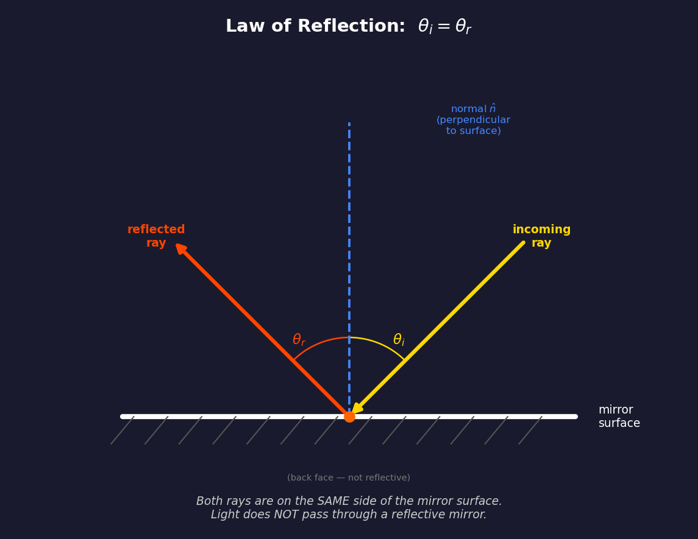
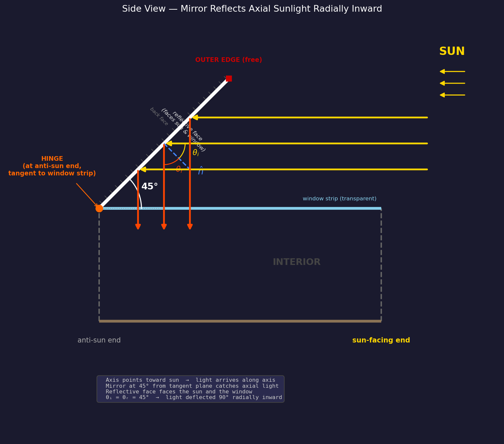
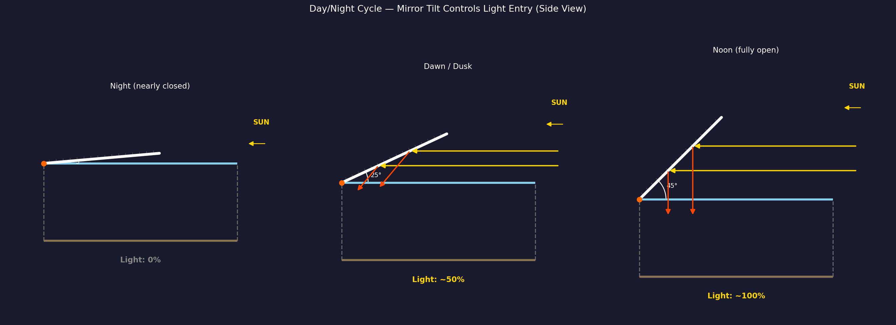

O'Neill Cylinder External Mirror Geometry¶
Purpose¶
Three large external mirrors reflect sunlight through the window strips into the cylinder interior, providing illumination to the land strips. Without mirrors, only direct sunlight through the windows would light the interior. The mirrors approximately triple the effective capture area.
Strip Layout (Cross-Section)¶
Looking from one end of the cylinder, six 60° strips alternate:
Land 2
(120°–180°)
/ \
Window 1 Window 3
(60°–120°) (180°–240°)
| |
Land 0 Land 4
(0°–60°) (240°–300°)
\ /
Window 5
(300°–360°)
Law of Reflection¶

The fundamental physics: when light hits a reflective surface, draw the normal (perpendicular line) at the point of contact. The angle of incidence \(\theta_i\) equals the angle of reflection \(\theta_r\), measured from the normal. Both rays are on the same side of the mirror — light does not pass through a reflective surface.
Mirror Construction¶
Each mirror is a flexible reflective surface — a large sheet of polished aluminum or deposited silver on a lightweight substrate. Key properties:
- One-sided reflection: Only the outward-facing surface is reflective. The back face has thermal management coatings and is not reflective.
- Light does not pass through the mirror. The mirror is opaque. Incoming and reflected rays are always on the same side (the reflective side).
- Light does not pass through any other opaque part of the cylinder system — land strips, end caps, structural rings, and the hull are all opaque. Only window strips are transparent.
Hinge Attachment¶
The mirror is attached to a hinge on one of its short sides:
- The hinge runs tangent to the window strip at the center of the window strip (not at the land/window border — see "Why Not Mount at the Land/Window Border?" below). It spans the full width of the window strip (~\(\pi R / 3\), where \(R\) is the cylinder radius).
- The hinge is bolted to the structural end ring at the anti-sunlight end of the cylinder (\(Y = -L/2\) in the local coordinate system).
- The hinge is a motorized actuator that controls the mirror tilt angle.
Mirror Dimensions¶
- Short side (tangential, at hinge): equal to window strip width
- Long side (diagonal extent): approximately equal to cylinder length \(L\)
- Thickness: thin flexible sheet with structural stiffener ribs on the back face, spaced ~50 m apart, to maintain flatness under centrifugal loading
Mirror Placement — Side View¶

The cylinder's long axis always points toward the sun. Sunlight arrives parallel to the axis. The mirrors are mounted at the anti-sun end and tilt diagonally outward to catch this axial light.
Mirror Angle: 0°–45° from the Tangent Plane¶
The mirror angle \(\alpha\) is measured from the tangent plane of the cylinder surface at the hinge point. The useful range is \(0° \leq \alpha \leq 45°\). In the side view, the tangent plane is the horizontal surface extending along the axis:
| \(\alpha\) | Mirror position | Light behavior |
|---|---|---|
| 0° | Flat along cylinder surface (closed) | No light caught — mirror edge-on to axial light |
| ~25° | Partially open | Some light reflected, enters window at an angle |
| 45° | Fully open (maximum) | Axial light deflected 90° radially inward |
There is no reason to tilt beyond 45°. At 45° the reflected light is already purely radial — the optimal geometry. Tilting further would direct the reflected beam partially back toward the sun rather than into the window.
Why 45° is the Maximum¶
In the side view coordinate system (\(+X\) = along axis toward sun, \(+Y\) = radial outward):
The mirror surface direction from the hinge:
The reflective face normal (perpendicular to mirror, pointing toward the sun and window):
For axial sunlight traveling toward the anti-sun end, \(\vec{d} = (-1, 0)\):
Since \(\vec{d} \cdot \hat{n} < 0\) for \(0° < \alpha \leq 45°\), the light correctly hits the reflective face. The reflected ray:
At \(\alpha = 45°\):
The reflected ray is \((0, -1)\) — purely radially inward — which passes straight through the window strip into the interior. This is the maximum useful tilt angle.
Three Mirrors¶
Three mirrors, one per window strip, each hinged at the center of its window strip:
| Mirror | Window strip | Hinge angle (center) |
|---|---|---|
| Mirror 1 | Window 1 (60°–120°) | 90° |
| Mirror 2 | Window 3 (180°–240°) | 210° |
| Mirror 3 | Window 5 (300°–360°) | 330° |
Day/Night Cycle¶

The mirror tilt angle \(\alpha\) (from the tangent plane) controls the simulated day/night cycle:
| Mirror state | Tilt \(\alpha\) | Light throughput | Simulated time |
|---|---|---|---|
| Nearly closed | ~5° | 0% | Night |
| Partially open | ~25° | ~50% | Dawn / Dusk |
| Fully open | 45° | ~100% | Noon |
All three mirrors open and close symmetrically to avoid unbalanced torque on the cylinder.
Day/night is controlled entirely by the mirror tilt, not by the cylinder's rotation. The transition speed between tilt angles controls dawn/dusk duration.
Why Not Mount at the Land/Window Border?¶
The first idea for mirror placement is intuitive: hinge the mirror at the border between a land strip and a window strip (e.g., at 120°, where Window 1 meets Land 2). The mirror opens like a door from the edge, covering the window from one side.
This has two problems:
1. Off-center illumination. The reflected light enters the window at an angle from the edge, not centered. One side of the window strip receives concentrated light while the far side receives little. Residents would see a bright band on one side of the land strip and shadow on the other.
2. The strobing problem. If the sun shines perpendicular to the cylinder axis (the naive orientation), only the mirrors on the sun-facing side catch light. As the cylinder rotates at ~1 RPM, each window strip faces the sun for only ~10 seconds out of every 63-second rotation. Residents would experience a disorienting ~1 Hz light flicker that no mirror arrangement at the border could eliminate — because the root cause is geometric, not about mirror placement.
Both problems are solved by O'Neill's design:
Constant Illumination — Axis Points at the Sun¶
O'Neill's solution: point the cylinder's long axis toward the sun, and mount each mirror at the center of its window strip.
Mounting at the window center (90°, 210°, 330°) instead of the border means reflected light enters the window symmetrically, illuminating the adjacent land strips evenly on both sides.
Pointing the axis toward the sun eliminates strobing entirely: - Sunlight arrives parallel to the rotation axis, not perpendicular to it - As the cylinder rotates, the mirrors maintain the same orientation relative to the sun (because rotating around the sun-axis doesn't change the geometry) - All three mirrors receive constant, equal illumination at all times - No strobing, no periodic variation — steady daylight
This is why the mirrors must be diagonal (tilted from the tangent plane). Axial sunlight cannot be caught by mirrors flat along the surface — they would be edge-on to the light. The tilt intercepts the axial beam and deflects it radially inward through the windows.
How the Outer Edge Stays in Place¶
The mirror's outer edge is free — it has no mechanical attachment to any external structure. This is counterintuitive, but the mirror is inherently stable due to the physics of the rotating system:
1. Centrifugal force holds the mirror open¶
The cylinder rotates at \(\omega \approx 0.1\) rad/s. Every point on the co-rotating mirror experiences centrifugal acceleration:
where \(r\) is the distance from the rotation axis. The outer edge of the mirror is at a larger radius than the hinge, so centrifugal force pulls it outward (away from the axis). This force acts like gravity pulling the mirror into its open position.
Key insight: Centrifugal force helps hold the mirror open — it doesn't try to close it. The hinge actuator must apply torque to close the mirror against centrifugal force, not to keep it open.
2. No aerodynamic forces¶
In vacuum, there is no wind loading, no flutter from airflow, and no turbulence. The only forces on the mirror are:
- Centrifugal force (outward) — stabilizing when open
- Solar radiation pressure (\(\sim 9 \times 10^{-6}\) N/m²) — negligible
- Thermal expansion from solar heating — managed by expansion joints
- Hinge actuator torque — controls the opening angle
3. Structural stiffener ribs prevent buckling¶
The mirror panel has a lattice of lightweight I-beam ribs (aluminum or carbon fiber) on the back face, spaced ~50 m apart. These ribs:
- Maintain flatness against centrifugal loading
- Prevent buckling modes from thermal cycling
- Distribute hinge loads across the full panel width
The mirror is structurally similar to an aircraft wing spar — rigid, lightweight, and engineered to resist bending.
4. No resonance excitation¶
Because the mirror co-rotates with the cylinder, it sits in a constant centrifugal field (like sitting in constant gravity). There are no periodic forces to excite vibration. The system is inherently stable.
5. What if the mirror were NOT co-rotating?¶
If the mirror were stationary while the cylinder rotates beneath it, it would:
- Experience no centrifugal force (it's in freefall)
- Need an independent support structure
- Flash alternating sunlight/shadow strips as the cylinder rotates underneath
- Be far more complex to engineer
This is why O'Neill's design has the mirrors rigidly attached to the hull and co-rotating. The rotating reference frame makes the mirror behave like a simple hinged panel in a gravitational field.
Inter-Cylinder Spacing Constraint¶
The counter-rotating pair must be spaced far enough apart that the mirrors of one cylinder do not collide with the other cylinder or its mirrors. This creates a geometric constraint that couples cylinder length \(L\) to the minimum center-to-center separation \(S\).
The Constraint¶
At 45° tilt, each mirror's radial extent (perpendicular to the axis) equals its axial extent:
The outer tip of a mirror on cylinder A is at distance \(R + L\) from A's axis. For clearance from cylinder B (radius \(R\)), the center-to-center spacing must satisfy:
or equivalently, the gap between the cylinder surfaces:
For a cylinder with \(R = 1\,\text{km}\) and \(L = 32\,\text{km}\) (O'Neill's original dimensions), the minimum separation is \(S > 2 + 64 = 66\,\text{km}\). This is a hard structural constraint — the bearing framework connecting the pair must span this distance.
Mitigation Strategies¶
Three approaches can relax this spacing constraint:
1. Staggered mirror orientation (60° rotational offset)
If the two cylinders have their strip patterns offset by one strip width (60°), each cylinder's mirrors point into the gaps between the other's mirrors. In the cross-section end view:
Cylinder A mirrors at: 90°, 210°, 330° (window centers)
Cylinder B mirrors at: 150°, 270°, 30° (offset by 60°)
The mirror fans interleave rather than overlap head-on. This reduces the worst-case radial overlap and allows closer spacing — roughly:
A factor-of-two improvement. In the 3D model, this is achieved by rotating the second cylinder's strip pattern by \(\pi/3\) relative to the first.
2. Shorter mirrors (reduced tilt angle)
A tilt angle \(\alpha < 45°\) reduces the radial extent to \(d_{\text{radial}} = L \sin(\alpha)\) while the axial extent becomes \(L \cos(\alpha)\). The tradeoff: the reflected light is no longer purely radial — it acquires an axial component, reducing illumination efficiency.
At \(\alpha = 30°\): \(d_{\text{radial}} = L \sin(30°) = 0.5L\), cutting radial extent by 50%. The reflected beam enters at an angle to the radial direction rather than straight through the window, but still provides useful illumination.
3. Segmented mirrors
Instead of one continuous surface per window strip, use multiple shorter segments at 45° arranged in a staircase pattern along the cylinder length. Each segment is shorter (less radial extent) but the segments collectively cover the full window area. This is structurally more complex but dramatically reduces the radial envelope.
Length as a Design Parameter¶
When cylinder length \(L\) is a free parameter (as in the interactive demo), the inter-cylinder gap must scale with \(L\):
This means longer cylinders require proportionally wider separation. The bearing framework, tension cables, and any shared infrastructure between the pair all scale with this distance, increasing structural mass. This creates an implicit upper bound on useful cylinder length — beyond a certain \(L\), the framework mass to span the gap becomes prohibitive.
Three.js Implementation¶
Coordinate System (inside the rotation={[-PI/2, 0, 0]} group)¶
- Y = cylinder long axis (rotation axis), sun at +Y end
- XZ = radial cross-section plane
- Point on rim at angle \(\theta\):
[cos(θ) × R, 0, sin(θ) × R] - Radial outward at angle \(\theta\): direction
[cos(θ), 0, sin(θ)]
Mirror Construction — Custom BufferGeometry¶
Each mirror is built as an explicit quad with four vertices — no Euler
rotations on the mesh. This avoids the compounding rotation errors that
plagued earlier implementations (see CLAUDE.md for lessons learned).
For each window strip \(i\) (strips 1, 3, 5):
- Center angle of the window strip:
-
\(\theta_c = \frac{\pi}{3}(2i + 1) + \frac{\pi}{6}\) → gives \(\frac{\pi}{2}\), \(\frac{7\pi}{6}\), \(\frac{11\pi}{6}\) (90°, 210°, 330°)
-
Group position = hinge point at the anti-sun end, on the cylinder surface at the window center:
-
[cos(θ_c) × R, -length/2, sin(θ_c) × R] -
Group rotation =
[0, -θ_c, 0]which establishes local axes: +X= radial outward (verified: \(R_Y(-\theta)\) maps \(+X\) to \((\cos\theta, 0, \sin\theta)\))+Y= axial toward sun-
+Z= tangential -
Mirror quad = custom
BufferGeometrywith four vertices in group-local coordinates:where \(d\) =Inner edge (at hinge): (0, 0, -t) and (0, 0, +t) Outer edge (diagonal): (d, d, -t) and (d, d, +t)mirrorAxialExtent(= cylinder length) and \(t\) =mirrorTangent / 2(half the window strip width).
The 45° diagonal is encoded directly in the vertex positions: the outer edge is at \((d, d)\) — equal parts radial (\(+X\)) and axial (\(+Y\)). No mesh-level rotation is needed.
- Hinge rod =
cylinderGeometryat the group origin, rotated to lie along the tangential direction (\(Z\)), spanning the same width as the mirror's inner edge.
Why Custom Geometry, Not Euler Rotations¶
Euler rotations on planeGeometry failed repeatedly because:
- \(R_Y(\alpha)\) maps \(+X \to (\cos\alpha, 0, -\sin\alpha)\) — the sign of the \(Z\) component is opposite to what intuition suggests. Using \(+\theta\) instead of \(-\theta\) sends the mirror radially inward.
- Compound rotations (group + mesh) create 6 interacting angle parameters with no visual ground truth in a space scene.
- Custom vertices eliminate all rotation ambiguity:
(d, d, ±t)is unambiguously at 45° outward and sunward.
Inter-Cylinder Gap (Dynamic)¶
The CounterRotatingPair component computes the gap dynamically:
mirrorRadialExtent = length
gap = mirrorRadialExtent × 2 + radius
sideOffset = radius × 2 + gap
This ensures mirrors never collide regardless of the cylinder length parameter.
Reflection Verification¶
With incoming axial light \(\vec{d} = (0, -1, 0)\) and mirror normal \(\hat{n} = (-0.707, 0.707, 0)\):
Reflected light goes radially inward (\(-\hat{X}\)) — through the window ✓
References¶
O'Neill, Gerard K. The High Frontier: Human Colonies in Space. William Morrow, 1977.
Johnson, Richard D., and Charles Holbrow, editors. Space Settlements: A Design Study (SP-413). NASA, 1977.